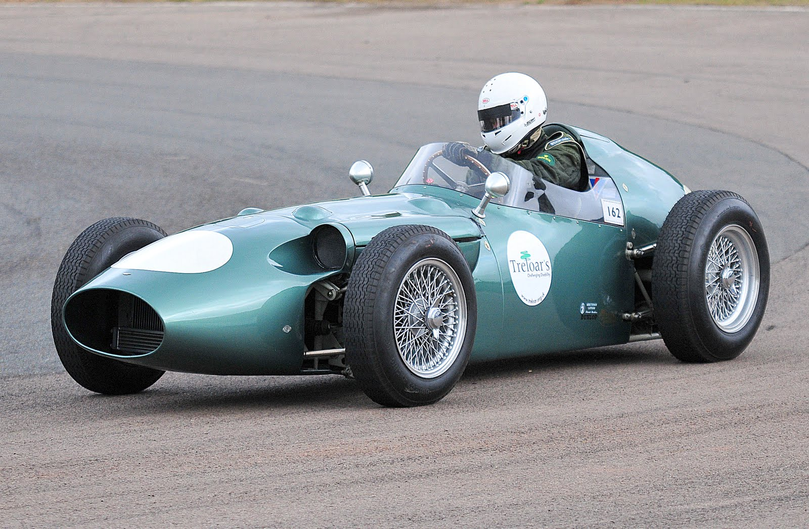
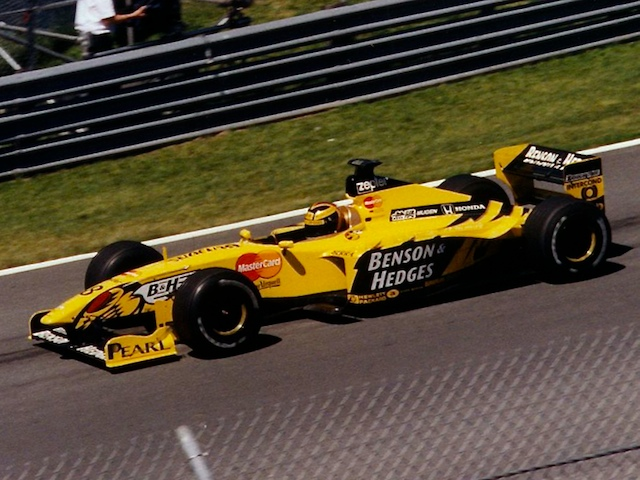
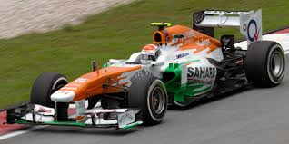
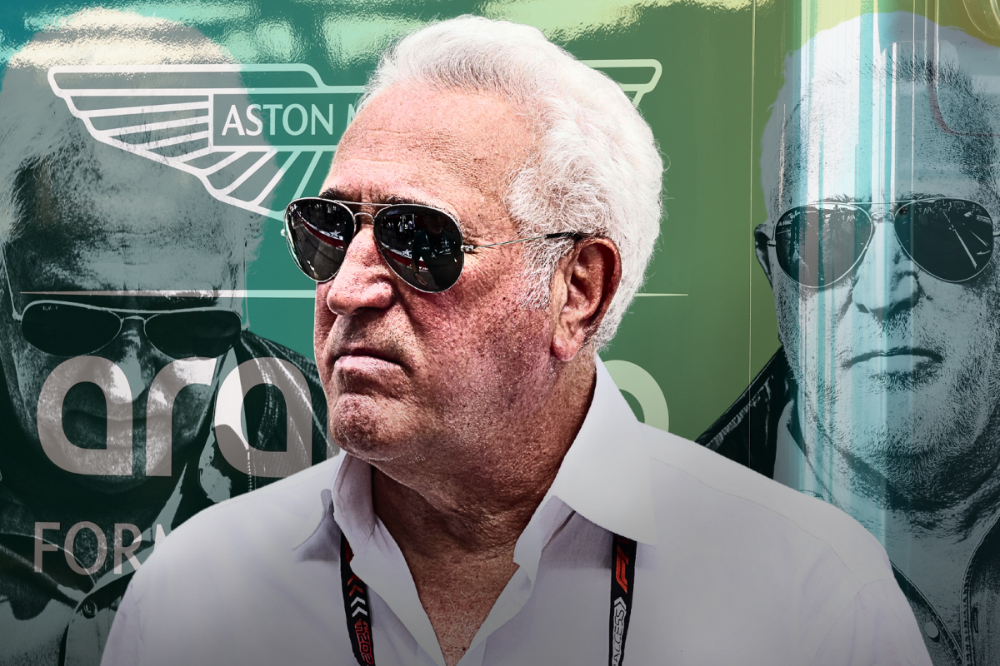

Aston Martin
The History of Aston Martin
Aston Martin has recently rejoined the sport after a bad run in the 50s now under the ownership of Lawrence Stroll.
In the Beginning
Aston Martin's early F1 involvement began in 1959 when the British marque entered the Formula One World Championship with the DBR4 chassis. Despite the prestige of the brand, the team struggled with outdated technology and failed to score points in the 1959 and 1960 seasons. They withdrew after just five races, marking the end of their first stint in the sport.
Previous Names
The lineage of the current Aston Martin F1 Team can be traced back to Jordan Grand Prix, founded by Eddie Jordan in 1991. Jordan achieved notable success in the late 1990s, including a famous win at the 1998 Belgian Grand Prix and third place in the Constructors’ Championship in 1999. In 2005, the team was sold to the Midland Group and briefly competed as Midland F1 Racing in 2006 before being sold to Spyker and becoming Spyker F1 in 2007.
Force India
In 2008, the team changed hands again, becoming Force India under the ownership of Indian businessman Vijay Mallya. Force India performed impressively for a midfield team, especially in 2016 and 2017 when they finished fourth in the Constructors’ Championship. Financial issues led to the team entering administration in 2018, after which a Lawrence Stroll-led consortium bought the assets and renamed the team Racing Point F1 Team in 2019.
Lawrence Stroll
In 2021, following Lawrence Stroll’s investment in Aston Martin Lagonda, the Racing Point team was rebranded as the Aston Martin F1 Team, officially bringing the brand back to the grid after more than 60 years. The team immediately made headlines with strong performances, including Sebastian Vettel’s podium at the 2021 Azerbaijan Grand Prix. Since then, the team has invested heavily in infrastructure, building a new factory in Silverstone and signing high-profile personnel to compete at the front of the grid. In 2024, Aston Martin announced a landmark partnership with legendary F1 designer Adrian Newey, signaling its ambition to become a championship contender.
